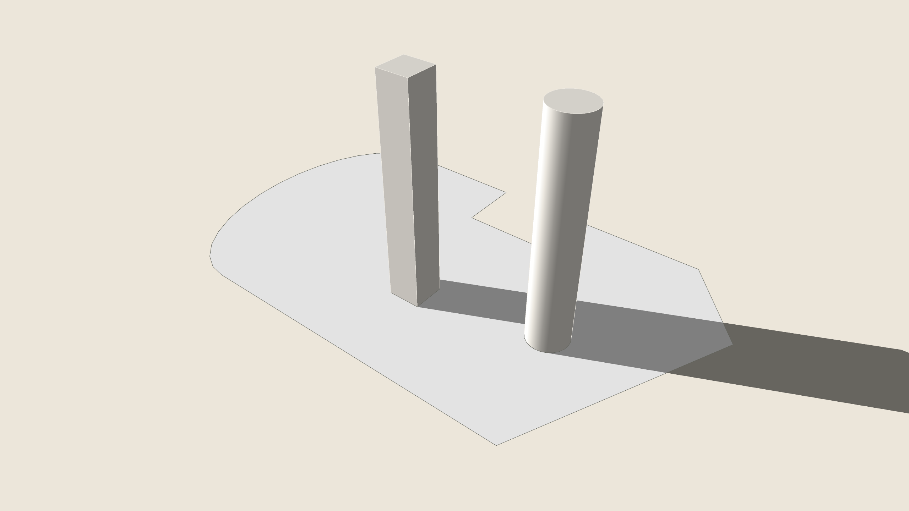
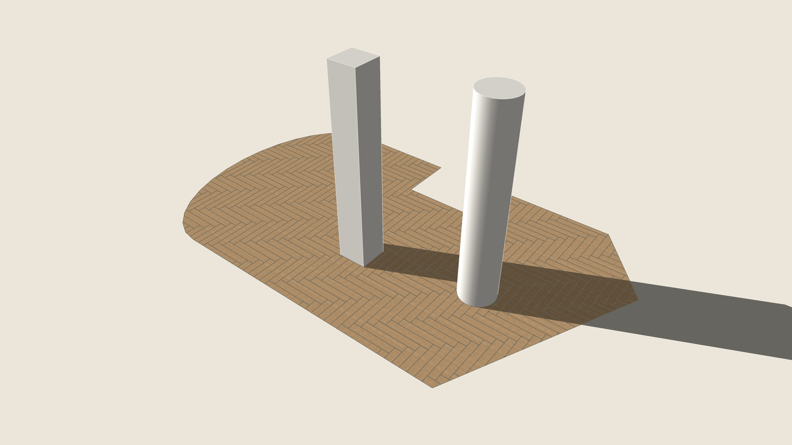

Select a face — a floor, a wall, inside a group or not — and run Tile: the box asks the tile's size in cm, the joint in mm, the pattern (straight, brick, diagonal), where it starts (the middle, so the cuts are the same on both sides, or the lower left corner) and a box's coverage. The tiles are laid on the face in their own group just over it, cut by its outline and its holes, the joints in grout. The message gives the area, the whole and the cut tiles and the boxes with 10 % over. One Undo.


BeforeAfter